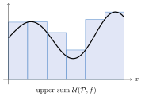
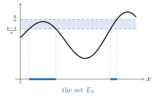
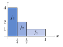

Chapter 16. The Lebesgue Integral
The Riemann integral squeezes a function between step functions, which are constant on intervals. The Lebesgue integral squeezes it between simple functions, which are constant on measurable sets. This one change gives an integral that applies to far more functions. It also behaves well under limits, which the Riemann integral does not.
The integral is built in four stages. Section 16.1 rewrites the upper and lower Riemann integrals in terms of step functions. Section 16.2 integrates simple functions. Section 16.3 integrates bounded measurable functions on sets of finite measure. It shows that every Riemann integrable function is included, proves the Bounded Convergence Theorem, and finally proves Lebesgue’s Theorem from Chapter 9. Sections 16.4 and 16.5 integrate nonnegative functions and then general functions, and prove the three big convergence theorems.
What this chapter uses from earlier chapters. Upper and lower sums and Riemann’s Criterion (Chapter 9), Lebesgue measure (Chapter 14), and measurable functions, simple functions and step functions (Chapter 15), including Theorem 15.3.2.
16.1 The Riemann Integral Revisited
Recall the upper and lower sums \(\mathcal{U}(\mathcal{P},f)\) and \(\mathcal{L}(\mathcal{P},f)\) and the upper and lower integrals \(\overline{\int_{a}^{b}}f\) and \(\underline{\int_{a}^{b}}f\) from Section 9.1. An upper sum is the area under a step function that lies above \(f\). This section makes that precise. The upper integral turns out to be the infimum of the integrals of all step functions above \(f\). The Lebesgue integral will be defined the same way, with step functions replaced by simple functions.
Step functions were defined in Definition 15.2.2. In this chapter, a step function on \([a,b]\) is a function \(\psi=\sum_{i=1}^nc_i\chi_{I_i}\), restricted to \([a,b]\), where \(I_1,\dots,I_n\) are pairwise disjoint subintervals of \([a,b]\). A single point is an interval (Definition 1.7.5). So a step function may take any values at finitely many points.
Lemma 16.1.1. Let \(\psi=\sum_{i=1}^nc_i\chi_{I_i}\) be a step function on \([a,b]\), where \(I_1,\dots,I_n\) are pairwise disjoint subintervals of \([a,b]\). Then \(\psi\in\mathcal{R}[a,b]\) and \[\int_a^b\psi=\sum_{i=1}^nc_i\,\ell(I_i).\]
Proof.
By Theorem 9.2.11, it is enough to show that \(\chi_I\in\mathcal{R}[a,b]\) with \(\int_a^b\chi_I=\ell(I)\) for each subinterval \(I\) of \([a,b]\). Let \(I\) have endpoints \(c\le d\). If \(c=d\), then \(\chi_I\) is zero except at one point. So \(\int_a^b\chi_I=0=\ell(I)\) by Exercise 9.2.2.
Suppose \(c<d\). On \([c,d]\), \(\chi_I\) equals the constant \(1\) except possibly at \(c\) and \(d\). So \(\chi_I\in\mathcal{R}[c,d]\) and \(\int_c^d\chi_I=d-c\), by Exercise 9.2.4. If \(a<c\), then on \([a,c]\), \(\chi_I\) equals \(0\) except possibly at \(c\). So \(\chi_I\in\mathcal{R}[a,c]\) and \(\int_a^c\chi_I=0\). Similarly, if \(d<b\), then \(\chi_I\in\mathcal{R}[d,b]\) and \(\int_d^b\chi_I=0\). By Theorem 9.2.13, applied once or twice, \(\chi_I\in\mathcal{R}[a,b]\) and \(\int_a^b\chi_I=d-c=\ell(I)\).
∎
Proposition 16.1.2. Let \(f\) be a bounded real-valued function defined on the interval \([a,b]\). Then \[\overline{\int_{a}^{b}}f=\inf\left\{\int_a^b\psi:\psi\text{ is a step function on $[a,b]$ with }\psi\ge f\right\}\] and \[\underline{\int_{a}^{b}}f=\sup\left\{\int_a^b\varphi:\varphi\text{ is a step function on $[a,b]$ with }\varphi\le f\right\}.\]
Proof.
Let \(J\) denote the infimum on the right side of the first equation. First, let \(\psi\) be a step function on \([a,b]\) with \(\psi\ge f\). By Lemma 16.1.1, \(\psi\in\mathcal{R}[a,b]\). For each partition \(\mathcal{P}\) of \([a,b]\), the supremum of \(\psi\) on each subinterval of \(\mathcal{P}\) is at least the supremum of \(f\) there. So \(\mathcal{U}(\mathcal{P},\psi)\ge\mathcal{U}(\mathcal{P},f)\). Taking the infimum over all \(\mathcal{P}\), \[\int_a^b\psi=\overline{\int_{a}^{b}}\psi\ge\overline{\int_{a}^{b}}f.\] Since \(\psi\) was arbitrary, \(J\ge\overline{\int_{a}^{b}}f\).
Next, let \(\mathcal{P}=\{x_0,x_1,\dots,x_n\}\) be a partition of \([a,b]\), and let \(M_i=\sup\{f(x):x_{i-1}\le x\le x_i\}\). Define \(\psi_\mathcal{P}\) by \[\psi_\mathcal{P}(x)=\begin{cases}M_i, & x\in(x_{i-1},x_i),\ i=1,\dots,n,\\ f(x_i), & x=x_i,\ i=0,\dots,n.\end{cases}\] Then \(\psi_\mathcal{P}\) is a step function on \([a,b]\), since the open intervals \((x_{i-1},x_i)\) and the single points \(\{x_i\}\) are pairwise disjoint intervals. Also \(\psi_\mathcal{P}\ge f\). By Lemma 16.1.1, \[\int_a^b\psi_\mathcal{P}=\sum_{i=1}^nM_i(x_i-x_{i-1})+\sum_{i=0}^nf(x_i)\cdot0=\mathcal{U}(\mathcal{P},f).\] So \(J\le\mathcal{U}(\mathcal{P},f)\) for every partition \(\mathcal{P}\), and \(J\le\overline{\int_{a}^{b}}f\). Therefore \(J=\overline{\int_{a}^{b}}f\).
The proof for the lower integral is the same, with \(M_i\) replaced by \(m_i=\inf\{f(x):x_{i-1}\le x\le x_i\}\) and the inequalities reversed.
∎
Look again at the Dirichlet function \(f=\chi_\mathbb{Q}\) on \([0,1]\) from Example 9.1.9. Every nondegenerate interval contains rational and irrational numbers. So a step function \(\psi\ge f\) is at least \(1\) except at finitely many points, and \(\int_0^1\psi\ge1\). A step function \(\varphi\le f\) is at most \(0\) except at finitely many points, and \(\int_0^1\varphi\le0\). This agrees with \(\overline{\int_{0}^{1}}f=1\) and \(\underline{\int_{0}^{1}}f=0\). Step functions are too coarse to see that \(\mathbb{Q}\) is a very thin set. Simple functions are not. The function \(\chi_\mathbb{Q}\) is itself a simple function. In Example 16.2.6 its Lebesgue integral will be \(0\).
Exercises
Exercise 16.1.1. Let \(f:[a,b]\to\mathbb{R}\) be bounded. Prove that \(f\in\mathcal{R}[a,b]\) if and only if for every \(\varepsilon>0\) there are step functions \(\varphi\) and \(\psi\) on \([a,b]\) with \(\varphi\le f\le\psi\) and \(\int_a^b(\psi-\varphi)<\varepsilon\). [Hint]
Exercise 16.1.2. Let \(f(x)=x\) on \([0,1]\). Show that \(\int_0^1\psi>\frac12\) for every step function \(\psi\ge f\) on \([0,1]\). So the infimum in Proposition 16.1.2 need not be attained. [Hint]
Exercise 16.1.3. Let \(\psi\) be a step function on \([a,b]\). Prove that there is a partition \(\{x_0,\dots,x_n\}\) of \([a,b]\) such that \(\psi\) is constant on each open interval \((x_{i-1},x_i)\). Conversely, prove that every function with this property is a step function on \([a,b]\). [Hint]
16.2 The Integral of a Simple Function
Recall from Definition 15.2.1 that a simple function is a measurable function with finitely many values. Its canonical representation is \(\varphi=\sum_{i=1}^na_i\chi_{A_i}\), where \(a_1,\dots,a_n\) are the distinct values of \(\varphi\) and \(A_i=\{\varphi=a_i\}\). The integral should be the sum of each value times the measure of the set where it is taken. Some of the sets \(A_i\) may have infinite measure. So we use the convention \(0\cdot\infty=0\), and we only integrate simple functions that are zero outside a set of finite measure.
Definition 16.2.1. Let \(\varphi\) be a simple function with canonical representation \(\varphi=\sum^n_{i=1}a_i\chi_{A_i}\). If \(\varphi\) vanishes outside a set of finite measure, define the integral of \(\varphi\) by \[\int\varphi=\int\varphi\,dm = \sum^n_{i=1}a_i m(A_i).\] If \(E\) is a measurable set, define \[\int_E\varphi=\int\varphi\cdot\chi_E.\] Here “\(\varphi\) vanishes outside a set of finite measure” means \(m(\{\varphi\ne0\})<\infty\). Then \(m(A_i)<\infty\) whenever \(a_i\ne0\). If \(a_i=0\), the term \(a_im(A_i)\) is \(0\), even if \(m(A_i)=\infty\). If \(\varphi\) is defined on a measurable set \(D\), then \(E\subset D\), and \(\varphi\cdot\chi_E\) is again a simple function that vanishes outside a set of finite measure.
Lemma 16.2.2. Let \(\varphi=\sum^n_{i=1}a_i\chi_{E_i}\) with \(E_i\cap E_j=\emptyset\) for \(i\ne j\). Suppose each set \(E_i\) is a measurable set of finite measure. Then \[\int\varphi=\sum^n_{i=1}a_im(E_i).\]
Proof. Assume \(\varphi\) has canonical representation \(\varphi=\sum^m_{k=1}\hat{a}_k\chi_{A_k}\). Suppose \(\hat a_k\ne0\). Since the \(E_i\) are disjoint, \(x\in A_k\) exactly when \(x\) lies in some \(E_i\) with \(a_i=\hat a_k\). So the set \[A_k=\{x:\varphi(x)= \hat{a}_k\}=\bigcup_{a_i=\hat{a}_k}E_i.\] Hence, by finite additivity, \[\hat{a}_k m(A_k)=\sum_{a_i=\hat{a}_k}a_im(E_i).\] If \(\hat a_k=0\), then \(\hat a_km(A_k)=0\). The terms \(a_im(E_i)\) with \(a_i=0\) are also \(0\). Each \(i\) with \(a_i\ne0\) has \(a_i=\hat a_k\) for exactly one \(k\). So \[\int\varphi=\sum^m_{k=1}\hat{a}_k m(A_k)=\sum^n_{i=1}a_im(E_i).\]
∎
Theorem 16.2.3. Let \(\varphi\) and \(\psi\) be simple functions which vanish outside a set of finite measure. Then \[\int(a\varphi+b\psi)=a\int\varphi + b\int \psi\] for all \(a,b\in\mathbb{R}\), and if \(\varphi\ge \psi\) a.e., then \[\int\varphi\ge \int\psi.\]
Proof. Let \(\{A_j\}\) and \(\{B_i\}\) be the sets in the canonical representations of \(\varphi\) and \(\psi\), respectively. The sets \(A_j\cap B_i\) are measurable and pairwise disjoint. Let \(E_1,\dots,E_N\) be those sets \(A_j\cap B_i\) that are nonempty and on which \(\varphi\) or \(\psi\) is not zero. Each \(E_k\) lies in \(\{\varphi\ne0\}\) or in \(\{\psi\ne0\}\), so \(m(E_k)<\infty\). On \(E_k\), \(\varphi\) and \(\psi\) are constant, say \(\varphi=c_k\) and \(\psi=d_k\). Off \(\bigcup_kE_k\), \(\varphi=\psi=0\). So \[\varphi=\sum^N_{k=1}c_k\chi_{E_k}\quad\text{and}\quad\psi=\sum^N_{k=1}d_k\chi_{E_k}.\] So \[a\varphi+b\psi=\sum_{k=1}^N(ac_k+bd_k)\chi_{E_k}.\] Thus, by Lemma 16.2.2, \[\begin{aligned} \int (a\varphi+b\psi)&=\sum_{k=1}^N(ac_k+bd_k)m(E_k)=a\sum_{k=1}^Nc_km(E_k)+b\sum_{k=1}^Nd_km(E_k)\\ &=a\int\varphi+b\int\psi. \end{aligned}\]
Lastly, suppose \(\varphi\ge\psi\) a.e. Then \(\varphi-\psi=\sum_{k=1}^N(c_k-d_k)\chi_{E_k}\). If \(c_k-d_k<0\), then \(E_k\subset\{\varphi<\psi\}\), so \(m(E_k)=0\). So every term of \(\sum_{k=1}^N(c_k-d_k)m(E_k)\) is at least \(0\). Thus \[\int\varphi-\int\psi=\int(\varphi-\psi)=\sum_{k=1}^N(c_k-d_k)m(E_k)\ge0.\]
∎
Corollary 16.2.4. If \(\varphi=\sum^n_{i=1}a_i\chi_{E_i}\), where \(E_1,\dots,E_n\) are measurable sets of finite measure that need not be disjoint, then \[\int\varphi=\sum^{n}_{i=1}a_im(E_i).\]
Proof. Each \(\chi_{E_i}\) is a simple function by Lemma 15.1.11, and \(\int\chi_{E_i}=m(E_i)\) by Lemma 16.2.2. So this is a direct result of Theorem 16.2.3.
∎
Proof Technique (Putting Two Simple Functions on the Same Sets).
To combine or compare two simple functions \(\varphi\) and \(\psi\), write them over the same disjoint sets, as in the proof of Theorem 16.2.3. Intersect the sets of the two canonical representations. Then both functions are constant on each piece. Sums, products, maxima and inequalities can then be checked one piece at a time. This is the measurable version of a common refinement of two partitions (Definition 8.1.4).
Step functions on \([a,b]\) are simple functions, since intervals are measurable. Their two integrals agree.
Corollary 16.2.5. Let \(\psi\) be a step function on \([a,b]\). Then \(\psi\) is a simple function and \[\int_{[a,b]}\psi=\int_a^b\psi.\]
Proof.
Write \(\psi=\sum_{i=1}^nc_i\chi_{I_i}\), where \(I_1,\dots,I_n\) are pairwise disjoint subintervals of \([a,b]\). Then \(\psi\chi_{[a,b]}=\psi\). Intervals are measurable and \(m(I_i)=\ell(I_i)\), by Theorems 14.2.10 and 14.1.4. By Lemma 16.2.2 and Lemma 16.1.1, \[\int_{[a,b]}\psi=\sum_{i=1}^nc_i\,\ell(I_i)=\int_a^b\psi.\]
∎
Example 16.2.6. Let \(f=\chi_\mathbb{Q}\) on \([0,1]\), the Dirichlet function. It is a simple function with canonical representation \(f=1\cdot\chi_{\mathbb{Q}\cap[0,1]}+0\cdot\chi_{[0,1]\setminus\mathbb{Q}}\). The set \(\mathbb{Q}\cap[0,1]\) is countable, so it has measure zero by Corollary 14.1.7. So \[\int_{[0,1]}f=1\cdot m(\mathbb{Q}\cap[0,1])+0\cdot m([0,1]\setminus\mathbb{Q})=0.\] This function is not Riemann integrable (Example 9.1.9).
Exercises
Exercise 16.2.1. Let \(\varphi(x)=\left\lfloor x\right\rfloor+\chi_\mathbb{Q}(x)\) for \(x\in[0,3]\). Show that \(\varphi\) is a simple function, write its canonical representation, and compute \(\int_{[0,3]}\varphi\). [Hint]
Exercise 16.2.2. Let \(\varphi\) be a simple function that vanishes outside a set of finite measure. Prove that \(|\varphi|\) is such a function, and that \(\left|\int\varphi\right|\le\int|\varphi|\). [Hint]
Exercise 16.2.3. Let \(\varphi\) and \(\psi\) be simple functions. Prove that \(\max\{\varphi,\psi\}\), \(\min\{\varphi,\psi\}\) and \(\varphi\psi\) are simple functions. [Hint]
Exercise 16.2.4. Let \(\varphi\) be a simple function that vanishes outside a set of finite measure, and let \(A\) and \(B\) be disjoint measurable sets. Prove that \(\int_{A\cup B}\varphi=\int_A\varphi+\int_B\varphi\). [Hint]
Exercise 16.2.5. Let \(\varphi\ge0\) be a simple function that vanishes outside a set of finite measure. Prove that \(\nu(E)=\int_E\varphi\) defines a measure \(\nu\) on the Lebesgue measurable sets (Definition 13.3.1). [Hint]
16.3 Bounded Functions on Sets of Finite Measure
Let \(f\) be a bounded function on a measurable set \(E\) with \(m(E)<\infty\). Every simple function on \(E\) vanishes outside \(E\), a set of finite measure, so it has an integral. Following Proposition 16.1.2, compare the infimum of \(\int_E\psi\) over simple functions \(\psi\ge f\) with the supremum of \(\int_E\varphi\) over simple functions \(\varphi\le f\). These are the upper and lower Lebesgue integrals of \(f\). For the Riemann integral, the upper and lower integrals can differ for many functions. For the Lebesgue integral, they agree exactly when \(f\) is measurable. In this section all simple functions are defined on \(E\).


Theorem 16.3.1. Let \(f\) be defined and bounded on a measurable set \(E\) with \(m(E)<\infty\). Then \(f\) is measurable if and only if \[\inf_{f\le\psi}\int_E \psi=\sup_{f\ge\varphi}\int_E\varphi,\] where \(\psi\) and \(\varphi\) range over the simple functions on \(E\) with \(\psi\ge f\) and \(\varphi\le f\).
Proof.
If \(\varphi\) and \(\psi\) are simple functions with \(\varphi\le f\le\psi\), then \(\int_E\varphi\le\int_E\psi\) by Theorem 16.2.3. So the supremum is always at most the infimum. See Figure 16.1.
(\(\Rightarrow\)) Suppose \(f\) is measurable, and let \(|f(x)|\le M\) for all \(x\in E\). Let \(n\in\mathbb{N}\). For each integer \(k\), let \[E_k=\left\{x\in E:\frac{k-1}{n}<f(x)\le\frac kn\right\}=\left\{f>\frac{k-1}{n}\right\}\cap\left\{f\le\frac kn\right\}.\] Each \(E_k\) is measurable. The sets \(E_k\) are pairwise disjoint and their union is \(E\). Since \(|f|\le M\), \(E_k\) is empty unless \(-Mn\le k<Mn+1\). So only finitely many \(E_k\) are nonempty. Define \[\psi_n=\sum_k\frac kn\chi_{E_k}\quad\text{and}\quad\varphi_n=\sum_k\frac{k-1}{n}\chi_{E_k},\] where both sums are over the finitely many \(k\) with \(E_k\ne\emptyset\). These are simple functions, and \(\varphi_n\le f\le\psi_n\). Also \(\psi_n-\varphi_n=\frac1n\) on \(E\). So \[0\le\inf_{f\le\psi}\int_E\psi-\sup_{f\ge\varphi}\int_E\varphi\le\int_E\psi_n-\int_E\varphi_n=\int_E(\psi_n-\varphi_n)=\frac{m(E)}{n}.\] This holds for every \(n\in\mathbb{N}\) and \(m(E)<\infty\). So the infimum and the supremum are equal.
(\(\Leftarrow\)) Suppose the infimum and the supremum are equal. Then for each \(n\in\mathbb{N}\) there are simple functions \(\varphi_n\) and \(\psi_n\) with \[\varphi_n\le f\le \psi_n\quad\text{and}\quad\int_E\psi_n-\int_E\varphi_n<\frac{1}{n}.\] Let \(\varphi^*=\sup_{n\in\mathbb{N}}\varphi_n\) and \(\psi^*=\inf_{n\in\mathbb{N}}\psi_n\). These are measurable by Theorem 15.1.5, and \(\varphi^*\le f\le \psi^*\). In particular they are real-valued, since \(f\) is bounded. We show \(\varphi^*=\psi^*\) a.e.
For \(j\in\mathbb{N}\), let \(\Delta_j=\left\{\psi^*-\varphi^*>\frac1j\right\}\), a measurable set. Fix \(n\in\mathbb{N}\). Since \(\varphi_n\le\varphi^*\) and \(\psi^*\le\psi_n\), the set \(\Delta_j\) is contained in \(G=\left\{\psi_n-\varphi_n>\frac1j\right\}\). Now \(\frac1j\chi_G\le\psi_n-\varphi_n\) on \(E\), and both sides are simple. By Theorem 16.2.3, \[\frac1j\,m(\Delta_j)\le\frac1j\,m(G)\le\int_E(\psi_n-\varphi_n)<\frac1n.\] So \(m(\Delta_j)<\frac jn\) for every \(n\in\mathbb{N}\), and \(m(\Delta_j)=0\). The set where \(\varphi^*<\psi^*\) is \(\bigcup_{j\in\mathbb{N}}\Delta_j\), which has measure zero. So \(\psi^*=\varphi^*\) a.e. Since \(\varphi^*\le f\le\psi^*\), \(f=\psi^*\) a.e. By Theorem 15.1.8, \(f\) is measurable.
∎
Definition 16.3.2. If \(f\) is a bounded measurable function on a measurable set \(E\) with \(m(E)<\infty\), the Lebesgue integral of \(f\) over \(E\) is \[\int_E f=\inf_{\psi\ge f}\int_E\psi,\] where \(\psi\) ranges over all simple functions \(\psi\ge f\) on \(E\). By Theorem 16.3.1, this also equals \(\sup_{\varphi\le f}\int_E\varphi\). We also write \(\int_Ef\,dm\) or \(\int_Ef(x)\,dm(x)\).
If \(f\) is itself simple, this agrees with Definition 16.2.1. Indeed, \(\psi=f\) is one of the functions in the infimum, and every simple \(\psi\ge f\) has \(\int_E\psi\ge\int_Ef\) by Theorem 16.2.3. On an interval, \(\int_{[a,b]}f\) denotes the Lebesgue integral and \(\int_a^bf\) the Riemann integral. The next theorem shows they agree whenever the Riemann integral exists.
Theorem 16.3.3. Let \(f\) be a bounded function defined on \([a,b]\). If \(f\in\mathcal{R}[a,b]\), then \(f\) is measurable and \[\int^b_a f=\int_{[a,b]}f.\]
Proof.
By Corollary 16.2.5, every step function on \([a,b]\) is a simple function, with the same Riemann and Lebesgue integrals. So by Proposition 16.1.2, \[\begin{aligned} \underline{\int_{a}^{b}}f=\sup_{\substack{\varphi\le f\\ \varphi\text{ step}}}\int_{[a,b]}\varphi&\le\sup_{\substack{\varphi\le f\\ \varphi\text{ simple}}}\int_{[a,b]}\varphi\\ &\le\inf_{\substack{\psi\ge f\\ \psi\text{ simple}}}\int_{[a,b]}\psi\le\inf_{\substack{\psi\ge f\\ \psi\text{ step}}}\int_{[a,b]}\psi=\overline{\int_{a}^{b}}f. \end{aligned}\] The first and last inequalities hold because there are more simple functions than step functions. The middle one holds by the first paragraph of the proof of Theorem 16.3.1. Since \(f\in\mathcal{R}[a,b]\), the two ends are equal to \(\int_a^bf\). So all of these quantities are equal. By Theorem 16.3.1, \(f\) is measurable, and then the middle quantities equal \(\int_{[a,b]}f\).
∎
The converse is false. The Dirichlet function is measurable but not Riemann integrable (Example 16.2.6). So the Lebesgue integral extends the Riemann integral. From now on we can compute \(\int_{[a,b]}f\) for a Riemann integrable \(f\) by any method from Chapter 9, including the Fundamental Theorem of Calculus.
To integrate over a measurable subset \(A\subset E\), restrict \(f\) to \(A\). The next lemma says this is the same as integrating \(f\chi_A\) over \(E\).
Lemma 16.3.4. Let \(f\) be a bounded measurable function on a measurable set \(E\) with \(m(E)<\infty\), and let \(A\subset E\) be measurable. Then \(\int_Af=\int_Ef\chi_A\).
Proof.
The function \(f\chi_A\) is bounded and measurable by Lemma 15.1.11 and Theorem 15.1.4. Let \(\psi\) be a simple function on \(A\) with \(\psi\ge f\) on \(A\). Extend \(\psi\) to \(E\) by setting it equal to \(0\) on \(E\setminus A\). The extension is simple, it is at least \(f\chi_A\), and its integral over \(E\) is \(\int_A\psi\). So \(\int_Ef\chi_A\le\int_A\psi\). Taking the infimum over \(\psi\), \(\int_Ef\chi_A\le\int_Af\).
Conversely, let \(\psi\) be a simple function on \(E\) with \(\psi\ge f\chi_A\). Then \(\psi\ge f\) on \(A\), and \(\psi\ge0\) on \(E\setminus A\). So \(\int_A\psi\le\int_A\psi+\int_{E\setminus A}\psi=\int_E\psi\), using \(\chi_E=\chi_A+\chi_{E\setminus A}\) and Theorem 16.2.3. Thus \(\int_Af\le\int_A\psi\le\int_E\psi\). Taking the infimum over \(\psi\), \(\int_Af\le\int_Ef\chi_A\).
∎
Theorem 16.3.5. If \(f\) and \(g\) are bounded measurable functions defined on a set \(E\) of finite measure, then each of the following hold.
\(\int_E(af+bg)=a\int_E f + b\int_E g\) for all \(a,b\in\mathbb{R}\).
If \(f=g\) a.e., then \(\int_E f=\int_E g\).
If \(f\le g\) a.e., then \(\int_E f\le \int_E g\).
\(\left|\int_E f\right|\le \int_E |f|\).
If \(\alpha\le f(x)\le \beta\) for all \(x\in E\), then \(\alpha m(E)\le \int_E f\le \beta m(E)\).
If \(A\) and \(B\) are disjoint measurable subsets of \(E\), then \(\int_{A\cup B}f=\int_A f + \int_B f\).
Proof. (1) If \(\psi\) is a simple function, so is \(a\psi\), and conversely for \(a\ne 0\). Hence, for \(a>0\), by Theorem 16.2.3, \[\int_E af=\inf_{a\psi\ge af}\int_E a\psi = a\inf_{\psi\ge f}\int_E \psi =a\int_E f.\] If \(a<0\), then \(a\varphi\ge af\) exactly when \(\varphi\le f\). So, by Theorem 16.3.1, \[\int_E af=\inf_{a\varphi\ge af}\int_E a\varphi = \inf_{\varphi\le f}a\int_E\varphi=a\sup_{\varphi\le f}\int_E \varphi =a\int_E f.\] If \(a=0\), both sides are \(0\).
If \(\psi_1\) is a simple function with \(f\le \psi_1\) and \(\psi_2\) is a simple function with \(g\le \psi_2\), then \(\psi_1+\psi_2\) is a simple function with \(f+g\le \psi_1+\psi_2\). Hence \[\int_E(f+g)\le \int_E(\psi_1+\psi_2)=\int_E\psi_1 + \int_E \psi_2.\] Since the infimum of the right side is \(\int_E f + \int_E g\), \[\int_E(f+g)\le \int_E f + \int_E g.\] Similarly, if \(\varphi_1\) and \(\varphi_2\) are simple functions with \(\varphi_1\le f\) and \(\varphi_2\le g\), \(\varphi_1+\varphi_2\) is a simple function with \(\varphi_1+\varphi_2\le f+g\). So \[\int_E(f+g)\ge \int_E(\varphi_1+\varphi_2)=\int_E\varphi_1 +\int_E\varphi_2.\] Since the supremum of the right side is \(\int_E f+\int_E g\), \[\int_E (f+g)\ge \int_E f + \int_E g.\] So \[\int_E(f+g)=\int_E f+ \int_E g.\] Here \(f+g\) is bounded and measurable by Theorem 15.1.4, and the second inequality uses Theorem 16.3.1 for \(f+g\). Combining the two parts, \(\int_E(af+bg)=\int_Eaf+\int_Ebg=a\int_Ef+b\int_Eg\).
(2) Since \(f-g=0\) a.e., if \(\psi\ge f-g\), then \(\psi\ge 0\) a.e. So \(\int_E\psi\ge 0\) by Theorem 16.2.3. Thus \(\int_E (f-g)\ge 0\). Also, if \(\varphi\le f-g\), then \(\varphi\le0\) a.e., so \(\int_E \varphi\le 0\). Thus \(\int_E(f-g)\le 0\) by Theorem 16.3.1. So \(\int_E(f-g)=0\), and \(\int_Ef=\int_Eg\) by (1).
(3) Since \(f-g\le 0\) a.e., if \(\varphi\le f-g\) is a simple function, then \(\varphi\le0\) a.e., and \(\int_E\varphi\le 0\). So \(\int_E(f-g)\le 0\) by Theorem 16.3.1. By (1), \(\int_Ef\le\int_Eg\).
(4) Since \(-|f|\le f\le |f|\), (1) and (3) give \(-\int_E|f|\le \int_E f\le \int_E |f|\). So \(\left|\int_E f\right|\le \int_E |f|\). Here \(|f|=\max\{f,-f\}\) is measurable by Theorem 15.1.5.
(5) Since \(\alpha\le f(x)\le \beta\) for all \(x\in E\), (3) gives \[\int_E \alpha \le \int_E f\le \int_E \beta.\] But the constants \(\alpha\) and \(\beta\) are simple functions, so \(\int_E \alpha=\alpha m(E)\) and \(\int_E \beta= \beta m(E)\). So \[\alpha m(E)\le \int_E f\le \beta m(E).\]
(6) By Lemma 15.1.10, Lemma 16.3.4 and (1), \[\int_{A\cup B}f=\int_{E} f\cdot(\chi_A+\chi_B)=\int_{E} f\cdot \chi_A + \int_{E} f\cdot\chi_B = \int_A f + \int_B f.\]
∎
Theorem 16.3.6 (Bounded Convergence Theorem).
Let \(\{f_n\}\) be a sequence of measurable functions defined on a set \(E\) of finite measure, and suppose that there is a real number \(M\) such that \(|f_n(x)|\le M\) for all \(n\in\mathbb{N}\) and for all \(x\in E\). If \(\lim_{n\to\infty}f_n(x)=f(x)\) for each \(x\in E\), then \[\int_E f = \lim_{n\to\infty}\int_E f_n.\]
Proof.
By Corollary 15.1.6, \(f\) is measurable. Also \(|f|\le M\), so \(\int_Ef\) is defined. We may assume \(M>0\). Let \(\varepsilon>0\). Choose \(\eta>0\) so small that \(\eta\, m(E)<\frac\varepsilon 2\), and let \(\delta=\frac{\varepsilon}{4M}\). By Theorem 15.3.2, there are a measurable set \(A\subset E\) with \(m(A)<\delta\) and an \(N\in\mathbb{N}\) such that \(|f_n(x)-f(x)|<\eta\) for all \(x\in E\setminus A\) and all \(n\ge N\).
Let \(n\ge N\). Split \(E\) into the good set \(E\setminus A\), where \(|f_n-f|\) is small, and the bad set \(A\), which is small. On \(E\setminus A\), \(0\le|f_n-f|\le\eta\). On \(A\), \(0\le|f_n-f|\le2M\). By Theorem 16.3.5 (1), (4), (6) and (5), \[\begin{aligned} \left|\int_E f_n-\int_E f\right|&=\left|\int_E (f_n-f)\right|\le \int_E|f_n-f|\\ &=\int_{E\setminus A}|f_n-f| + \int_A|f_n-f|\\ &\le\eta\, m(E\setminus A)+2M\,m(A)<\frac\varepsilon 2+2M\cdot\frac{\varepsilon}{4M}=\varepsilon. \end{aligned}\] So \(\int_E f_n \to \int_E f\).
∎
Corollary 16.3.7. Let \(\{f_n\}\) and \(M\) be as in Theorem 16.3.6, and let \(f\) be a bounded measurable function on \(E\). If \(f_n\to f\) a.e. on \(E\), then \(\int_Ef=\lim_{n\to\infty}\int_Ef_n\).
Proof.
By Definition 15.3.3, there is a set \(B\subset E\) with \(m(B)=0\) such that \(f_n\to f\) at every point of \(E\setminus B\). If \(g\) is bounded and measurable on \(E\), say \(|g|\le K\), then \(\left|\int_Bg\right|\le K\,m(B)=0\) by Theorem 16.3.5 (4) and (5). So \(\int_Eg=\int_{E\setminus B}g\) by Theorem 16.3.5 (6). Apply this to each \(f_n\) and to \(f\), and apply Theorem 16.3.6 on \(E\setminus B\).
∎
Proof Technique (Ignoring Sets of Measure Zero).
Integrals do not see sets of measure zero. If \(f=g\) a.e., then \(\int_Ef=\int_Eg\). So a hypothesis that holds a.e. is usually as good as one that holds everywhere. The standard move has three steps. Find a set \(B\) of measure zero off which the hypothesis holds. Prove the result on \(E\setminus B\). Then note that \(\int_Eh=\int_{E\setminus B}h\) for every function \(h\) in sight. The proof of Corollary 16.3.7 works this way. One caution. The functions must still be measurable on all of \(E\), and bounded if the integral being used needs that, or the integrals over \(E\) are not defined.
Arzelà’s Bounded Convergence Theorem for Riemann integrals, Theorem 11.2.21, was stated in Chapter 11 without proof. It now follows quickly.
Corollary 16.3.8 (Arzelà).
Let \(f_n,f\in\mathcal{R}[a,b]\) with \(f_n(x)\to f(x)\) for each \(x\in[a,b]\). Suppose there is an \(M\) with \(|f_n(x)|\le M\) for all \(x\in[a,b]\) and all \(n\in\mathbb{N}\). Then \(\int_a^bf_n\to\int_a^bf\).
Proof.
By Theorem 16.3.3, each \(f_n\) and \(f\) is measurable, with the same Riemann and Lebesgue integrals. Apply Theorem 16.3.6 with \(E=[a,b]\).
∎
The Lebesgue version is stronger. It does not need the hypothesis \(f\in\mathcal{R}[a,b]\), since the limit of measurable functions is always measurable. In Example 11.1.6, the limit \(f\) is not Riemann integrable. But \(f=1\) a.e., so \(\int_{[0,1]}f=1=\lim\int_0^1f_n\).
Finally, we can prove Lebesgue’s Theorem, Theorem 9.2.9. The proof measures how badly \(f\) fails to be continuous at each point.
Definition 16.3.9. Let \(f:[a,b]\to\mathbb{R}\) be bounded. For \(x\in[a,b]\) and \(\delta>0\), let \[\omega_f(x,\delta)=\sup\{|f(s)-f(t)|:s,t\in[a,b],\ |s-x|<\delta,\ |t-x|<\delta\}.\] This decreases as \(\delta\) decreases. The oscillation of \(f\) at \(x\) is \(\omega_f(x)=\inf_{\delta>0}\omega_f(x,\delta)\).
Lemma 16.3.10. Let \(f:[a,b]\to\mathbb{R}\) be bounded and let \(x\in[a,b]\). Then \(f\) is continuous at \(x\) if and only if \(\omega_f(x)=0\).
Proof.
Suppose \(f\) is continuous at \(x\), and let \(\varepsilon>0\). Choose \(\delta>0\) with \(|f(s)-f(x)|<\frac\varepsilon 2\) for all \(s\in[a,b]\) with \(|s-x|<\delta\). If \(s\) and \(t\) are such points, then \(|f(s)-f(t)|\le|f(s)-f(x)|+|f(x)-f(t)|<\varepsilon\). So \(\omega_f(x)\le\omega_f(x,\delta)\le\varepsilon\). Since \(\varepsilon\) was arbitrary, \(\omega_f(x)=0\).
Conversely, suppose \(\omega_f(x)=0\), and let \(\varepsilon>0\). Choose \(\delta>0\) with \(\omega_f(x,\delta)<\varepsilon\). If \(s\in[a,b]\) and \(|s-x|<\delta\), take \(t=x\) in the definition to get \(|f(s)-f(x)|\le\omega_f(x,\delta)<\varepsilon\). So \(f\) is continuous at \(x\).
∎
Theorem 16.3.11 (Lebesgue’s Theorem).
Let \(f:[a,b]\to\mathbb{R}\) be bounded. Then \(f\in\mathcal{R}[a,b]\) if and only if the set of points at which \(f\) has discontinuities has measure zero.
Proof.
Let \(D\) be the set of points of \([a,b]\) at which \(f\) is discontinuous. For \(k\in\mathbb{N}\), let \(D_k=\left\{x\in[a,b]:\omega_f(x)\ge\frac1k\right\}\). By Lemma 16.3.10, \(D=\bigcup_{k\in\mathbb{N}}D_k\). Recall from Section 14.1 that \(D\) has measure zero exactly when \(m^*(D)=0\).
(\(\Rightarrow\)) Suppose \(f\in\mathcal{R}[a,b]\). Fix \(k\in\mathbb{N}\) and let \(\varepsilon>0\). By Riemann’s Criterion (Theorem 9.2.1), there is a partition \(\mathcal{P}=\{x_0,\dots,x_n\}\) of \([a,b]\) with \[\mathcal{U}(\mathcal{P},f)-\mathcal{L}(\mathcal{P},f)=\sum_{i=1}^n(M_i-m_i)\Delta x_i<\frac{\varepsilon}{k}.\] Let \(x\in D_k\) with \(x\notin\mathcal{P}\). Then \(x\in(x_{i-1},x_i)\) for some \(i\). For small \(\delta>0\), the interval \((x-\delta,x+\delta)\) lies inside \((x_{i-1},x_i)\), and so \(\omega_f(x,\delta)\le M_i-m_i\). Thus \(M_i-m_i\ge\omega_f(x)\ge\frac1k\). Let \(S\) be the set of indices \(i\) with \(M_i-m_i\ge\frac1k\). Then \[\frac1k\sum_{i\in S}\Delta x_i\le\sum_{i\in S}(M_i-m_i)\Delta x_i<\frac\varepsilon k,\] so \(\sum_{i\in S}\Delta x_i<\varepsilon\). We have shown \(D_k\subset\mathcal{P}\cup\bigcup_{i\in S}(x_{i-1},x_i)\). The finite set \(\mathcal{P}\) has outer measure zero. By Theorems 14.1.6 and 14.1.4, \(m^*(D_k)\le\sum_{i\in S}\Delta x_i<\varepsilon\). Since \(\varepsilon\) was arbitrary, \(m^*(D_k)=0\). By subadditivity again, \(m^*(D)\le\sum_km^*(D_k)=0\).
(\(\Leftarrow\)) Suppose \(m^*(D)=0\), and let \(|f|\le K\) on \([a,b]\). For each \(n\in\mathbb{N}\), let \(\mathcal{P}_n\) be the partition of \([a,b]\) into \(2^n\) subintervals of equal length. Let \(m_i\) and \(M_i\) be the infimum and supremum of \(f\) on the \(i\)th subinterval \([x_{i-1},x_i]\) of \(\mathcal{P}_n\). Define step functions \(\varphi_n\) and \(\psi_n\) on \([a,b]\) by \(\varphi_n=m_i\) and \(\psi_n=M_i\) on \((x_{i-1},x_i)\), and \(\varphi_n=\psi_n=f\) at the points of \(\mathcal{P}_n\). Then \(\varphi_n\le f\le\psi_n\). As in the proof of Proposition 16.1.2, \(\int_a^b\psi_n=\mathcal{U}(\mathcal{P}_n,f)\) and \(\int_a^b\varphi_n=\mathcal{L}(\mathcal{P}_n,f)\). By Corollary 16.2.5 and Theorem 16.2.3, \[\mathcal{U}(\mathcal{P}_n,f)-\mathcal{L}(\mathcal{P}_n,f)=\int_{[a,b]}(\psi_n-\varphi_n).\]
Let \(Q=\bigcup_n\mathcal{P}_n\), a countable set. Let \(x\in[a,b]\) with \(x\notin D\cup Q\), and let \(\varepsilon>0\). Since \(f\) is continuous at \(x\), there is a \(\delta>0\) with \(|f(s)-f(x)|<\varepsilon\) for all \(s\in[a,b]\) with \(|s-x|<\delta\). Choose \(N\) with \(\frac{b-a}{2^N}<\delta\). For \(n\ge N\), \(x\) lies in an open subinterval \((x_{i-1},x_i)\) of \(\mathcal{P}_n\) of length less than \(\delta\). So \([x_{i-1},x_i]\subset(x-\delta,x+\delta)\), and \(f(x)-\varepsilon\le m_i\le M_i\le f(x)+\varepsilon\). So \(0\le\psi_n(x)-\varphi_n(x)\le2\varepsilon\) for all \(n\ge N\). Thus \(\psi_n-\varphi_n\to0\) at every point outside \(D\cup Q\). The set \(D\cup Q\) has measure zero. Also \(|\psi_n-\varphi_n|\le2K\). By Corollary 16.3.7, \[\mathcal{U}(\mathcal{P}_n,f)-\mathcal{L}(\mathcal{P}_n,f)=\int_{[a,b]}(\psi_n-\varphi_n)\to0.\] So for every \(\varepsilon>0\) there is a partition \(\mathcal{P}_n\) with \(\mathcal{U}(\mathcal{P}_n,f)-\mathcal{L}(\mathcal{P}_n,f)<\varepsilon\). By Riemann’s Criterion, \(f\in\mathcal{R}[a,b]\).
∎
In words, a bounded function on \([a,b]\) is Riemann integrable exactly when it is continuous almost everywhere. Compare this with the Lebesgue integral. A bounded function on \([a,b]\) has a Lebesgue integral exactly when it is measurable (Theorem 16.3.1). Measurability is a much weaker condition than continuity almost everywhere.
Exercises
Exercise 16.3.1. Show that the hypothesis \(m(E)<\infty\) cannot be dropped from Theorem 16.3.6. Let \(f_n=\frac1n\chi_{[0,n]}\) on \(\mathbb{R}\). Show that each \(f_n\) is a simple function that vanishes outside a set of finite measure, that \(|f_n|\le1\), and that \(f_n\to0\) uniformly on \(\mathbb{R}\). But \(\int f_n=1\) for every \(n\).
Exercise 16.3.2. Show that the bound \(M\) cannot be dropped from Theorem 16.3.6. Let \(f_n=n\chi_{(0,1/n)}\) on \([0,1]\). Show that \(f_n\to0\) at every point of \([0,1]\), but \(\int_{[0,1]}f_n=1\) for every \(n\). [Solution]
Exercise 16.3.3. Use Corollary 16.3.7 to find \[\lim_{n\to\infty}\int_{[0,1]}\frac{1}{1+x^n}\,dm\quad\text{and}\quad\lim_{n\to\infty}\int_{[0,1]}\frac{nx}{1+n^2x^2}\,dm.\] Check the second answer by computing the integral with the Fundamental Theorem of Calculus. [Hint]
Exercise 16.3.4. Let \(f\) be a bounded measurable function on a set \(E\) of finite measure. Suppose \(\int_Af=0\) for every measurable set \(A\subset E\). Prove that \(f=0\) a.e. on \(E\). [Hint]
Exercise 16.3.5. Use Lebesgue’s Theorem to show that Thomae’s function (Example 6.3.2), restricted to \([0,1]\), is Riemann integrable. Then use Theorem 16.3.3 and Theorem 16.3.5 (2) to show that its integral is \(0\). [Hint]
Exercise 16.3.6. Let \(C\) be the Cantor set (Chapter 5). Show that \(\chi_C\) is discontinuous exactly at the points of \(C\). Conclude that \(\chi_C\in\mathcal{R}[0,1]\), and find \(\int_0^1\chi_C\). [Hint]
Exercise 16.3.7. Use Lebesgue’s Theorem to give new proofs of two earlier results. First, if \(f,g\in\mathcal{R}[a,b]\), then \(fg\in\mathcal{R}[a,b]\) (Theorem 9.2.11). Second, if \(f\in\mathcal{R}[a,b]\) and \(h\) is continuous on \(\mathbb{R}\), then \(h\circ f\in\mathcal{R}[a,b]\) (Theorem 9.2.3). [Hint]
Exercise 16.3.8. Let \(f\in\mathcal{R}[a,b]\) and let \(g:[a,b]\to\mathbb{R}\) be bounded with \(g=f\) a.e. Show by example that \(g\) need not be Riemann integrable. Show that \(g\) is measurable and \(\int_{[a,b]}g=\int_a^bf\). [Hint]
16.4 The Integral of a Nonnegative Function
Now drop both restrictions, for nonnegative functions. A nonnegative measurable function may be unbounded, it may take the value \(\infty\), and it may be nonzero on a set of infinite measure. Its integral is defined as the supremum of the integrals of the bounded functions below it that vanish outside a set of finite measure. This supremum may be \(\infty\). We use the conventions \(c\cdot\infty=\infty\) for \(c>0\) and \(0\cdot\infty=0\).
Definition 16.4.1. If \(f\) is a nonnegative measurable function defined on a measurable set \(E\), define \[\int_E f=\sup_{h\le f}\int_E h,\] where \(h\) ranges over the bounded measurable functions on \(E\) with \(m(\{x:h(x)\ne 0\})<\infty\). For such an \(h\), let \(E_h=\{x\in E:h(x)\ne0\}\), and define \(\int_Eh=\int_{E_h}h\). If \(E'\) is any measurable set with \(E_h\subset E'\subset E\) and \(m(E')<\infty\), then \(\int_{E'}h=\int_{E_h}h+\int_{E'\setminus E_h}h=\int_{E_h}h\) by Theorem 16.3.5 (6) and (5), since \(h=0\) on \(E'\setminus E_h\). So \(\int_Eh\) can be computed on any such \(E'\). The value \(\int_Ef\) lies in \([0,\infty]\).
If \(f\) is bounded and \(m(E)<\infty\), this agrees with Definition 16.3.2. Indeed, \(h=f\) is allowed, and every allowed \(h\le f\) has \(\int_Eh\le\int_Ef\) by Theorem 16.3.5 (3).
Theorem 16.4.2. If \(f\) and \(g\) are nonnegative measurable functions and \(E\) is a measurable set, then the following are true.
\(\int_E cf=c\int_E f\) for all \(c>0\).
\(\int_E(f+g)=\int_E f+\int_E g\).
If \(f\le g\) a.e., then \(\int_Ef\le \int_Eg\).
Proof. In this proof, \(h\), \(k\) and \(\ell\) always denote bounded measurable functions on \(E\) that vanish outside a set of finite measure.
(1) Well, an application of Theorem 16.3.5 (1) gives \[\int_E cf=\sup_{ch\le cf}\int_E ch=c\sup_{h\le f}\int_E h=c\int_E f.\] Here \(ch\) ranges over all allowed functions as \(h\) does, since \(c\ne0\). So (1) holds.
(2) The function \(f+g\) is measurable. The proof of Theorem 15.1.4 works for functions with values in \([0,\infty]\). First, let \(h\le f\) and \(k\le g\). Then \(h+k\) is bounded and measurable, it vanishes outside \(E_h\cup E_k\), which has finite measure, and \(h+k\le f+g\). Computing all three integrals on \(E_h\cup E_k\), Theorem 16.3.5 (1) gives \[\int_E h+\int_E k=\int_E(h+k)\le\int_E(f+g).\] Take the supremum over \(h\), and then over \(k\). This gives \(\int_E f + \int_E g\le \int_E(f+g)\).
For the reverse inequality, let \(\ell\le f+g\). Split \(\ell\) into a part below \(f\) and a part below \(g\). Let \(h=\min\{f,\ell\}\) and \(k=\ell-h\). Since \(\min\{0,\ell\}\le h\le\ell\), the function \(h\) is real-valued, and \(|h|\le|\ell|\). So \(h\) and \(k\) are measurable by Theorems 15.1.5 and 15.1.4. At a point where \(\ell\le f\), \(h=\ell\) and \(k=0\le g\). At a point where \(\ell>f\), \(f\) is finite, \(h=f\) and \(k=\ell-f\le g\). So \(h\le f\) and \(k\le g\) everywhere. Also \(0\le k\le|\ell|\). Both \(h\) and \(k\) vanish where \(\ell\) vanishes. Hence \[\int_E\ell=\int_E h+\int_E k\le\int_E f+\int_E g.\] Taking the supremum over \(\ell\) gives \(\int_E(f+g)\le\int_E f+\int_E g\).
(3) Let \(h\le f\). The set \(B=\{h>g\}\) is contained in \(\{f>g\}\), so \(m(B)=0\). Let \(\tilde h=h\) on \(E\setminus B\) and \(\tilde h=0\) on \(B\). Then \(\tilde h\) is bounded and measurable, it vanishes outside \(E_h\), and \(\tilde h\le g\) everywhere, since \(g\ge0\). Also \(\tilde h=h\) a.e. So, computing on \(E_h\), Theorem 16.3.5 (2) gives the equality below, and Definition 16.4.1 gives the inequality. \[\int_Eh=\int_E\tilde h\le\int_Eg.\] Taking the supremum over \(h\) gives \(\int_Ef\le\int_Eg\).
∎
Theorem 16.4.3. Let \(f\) be a nonnegative measurable function defined on a measurable set \(E\). Then \(\int_E f=0\) if and only if \(f=0\) a.e. on \(E\).
Proof. See Exercise 16.4.1.
∎
As in Lemma 16.3.4, the integral over a subset \(A\subset E\) is the integral of \(f\chi_A\) over \(E\). It follows that sets of measure zero can be ignored.
Lemma 16.4.4. Let \(f\) be a nonnegative measurable function on a measurable set \(E\), and let \(A\subset E\) be measurable.
\(\int_Af=\int_Ef\chi_A\).
If \(A\subset B\subset E\) with \(B\) measurable, then \(\int_Af\le\int_Bf\).
If \(m(A)=0\), then \(\int_Af=0\) and \(\int_Ef=\int_{E\setminus A}f\).
Proof.
(1) The proof is the same as for Lemma 16.3.4, with suprema in place of infima. An allowed \(h\le f\) on \(A\), extended by \(0\) to \(E\), is an allowed function below \(f\chi_A\) with the same integral. Conversely, if \(h\le f\chi_A\) on \(E\), then \(h\le0\) on \(E\setminus A\). So \(\int_Eh\le\int_Ah\), and the restriction of \(h\) to \(A\) is allowed and below \(f\).
(2) Since \(f\chi_A\le f\chi_B\), this follows from (1) and Theorem 16.4.2 (3).
(3) Since \(f\chi_A=0\) a.e. and \(f\chi_{E\setminus A}=f\) a.e., this follows from (1) and Theorem 16.4.2 (3).
∎
Lemma 16.4.5 (Fatou’s Lemma).
If \(\{f_n\}\) is a sequence of nonnegative measurable functions and \(f_n\to f\) a.e. on a set \(E\), where \(f\ge0\) on \(E\), then \[\int_E f \le \liminf\int_E f_n.\]
Proof.
The function \(f\) equals the measurable function \(\liminf f_n\) a.e., so it is measurable by Theorems 15.1.5 and 15.1.8. Let \(B\subset E\) be a set of measure zero off which \(f_n\to f\). By Lemma 16.4.4 (3), removing \(B\) from \(E\) does not change \(\int_Ef\) or any \(\int_Ef_n\). So we may assume \(f_n(x)\to f(x)\) for every \(x\in E\).
Let \(h\) be a bounded measurable function with \(h\le f\) that vanishes outside a set \(E'\subset E\) of finite measure. Say \(|h|\le K\). It is enough to show \(\int_Eh\le\liminf\int_Ef_n\). Then the supremum over \(h\) gives the result.
For each \(n\), let \(h_n=\min\{h,f_n\}\). This is measurable, \(-K\le h_n\le h\le K\), and \(h_n=0\) off \(E'\). Let \(x\in E'\). If \(f(x)>h(x)\), then \(f_n(x)>h(x)\) for large \(n\), so \(h_n(x)=h(x)\) for large \(n\). If \(f(x)=h(x)\), then \(h_n(x)=\min\{h(x),f_n(x)\}\to h(x)\). Either way \(h_n\to h\) on \(E'\). By the Bounded Convergence Theorem on \(E'\), \[\int_Eh=\int_{E'}h=\lim_{n\to\infty}\int_{E'}h_n.\] Each \(h_n\) is an allowed function with \(h_n\le f_n\). So \(\int_{E'}h_n=\int_Eh_n\le\int_Ef_n\) by Definition 16.4.1. Thus \(\int_Eh\le\liminf\int_Ef_n\).
∎
Example 16.4.6. The \(\le\) in \(\int_E f \le \liminf\int_E f_n\) in the statement of Fatou’s Lemma is important. Consider the sequence \(\{f_n\}\) defined by \(f_n(x)=1\) if \(n\leq x< n+1\) with \(f_n(x)=0\) otherwise. It satisfies the hypotheses of Fatou’s Lemma and \(\int_{[0,\infty)} f < \liminf\int_{[0,\infty)} f_n\). Here \(f=0\) and every \(\int_{[0,\infty)}f_n=1\). See Figure 16.2 and Exercise 16.4.2.

Theorem 16.4.7 (Monotone Convergence Theorem).
Let \(\{f_n\}\) be an increasing sequence of nonnegative measurable functions, and let \(f_n\to f\) a.e. on a set \(E\), where \(f\ge0\) on \(E\). Then \[\int_E f=\lim_{n\to\infty}\int_E f_n.\]
Proof. By Fatou’s Lemma (Lemma 16.4.5), \[\int_E f\le \liminf \int_E f_n.\] But for each \(n\in\mathbb{N}\), \(f_n\le f\) a.e., since \(\{f_n\}\) increases to \(f\) a.e., and so \(\int_E f_n\le \int_E f\) by Theorem 16.4.2 (3). Thus \[\limsup\int_E f_n\le \int_E f.\] Hence \[\int_E f=\lim_{n\to\infty}\int_E f_n.\]
∎
Example 16.4.8. The Monotone Convergence Theorem does not always hold for decreasing sequences. For example, the sequence of functions \(\{f_n\}\) defined by \(f_n(x)=0\) for \(x<n\) and \(f_n(x)=1\) for \(x\geq n\) is decreasing but the conclusion of the Monotone Convergence Theorem does not hold. Here \(f_n\to0\) everywhere, but \(\int_\mathbb{R}f_n=\infty\) for every \(n\). See Exercise 16.4.3.
Corollary 16.4.9. Let \(\{u_n\}\) be a sequence of nonnegative measurable functions, and let \(f=\sum^\infty_{n=1}u_n\) on a set \(E\). Then \[\int_E f=\sum^\infty_{n=1}\int_E u_n.\]
Proof. Define \(s_k=\sum^k_{n=1} u_n\). Now \(\{s_k\}\) is an increasing sequence and converges to \(f\). So by the Monotone Convergence Theorem and Theorem 16.4.2 (2), \[\int_E f=\lim_{k\to\infty}\int_E s_k=\lim_{k\to\infty}\int_E\sum^k_{n=1} u_n = \lim_{k\to\infty}\sum^k_{n=1}\int_E u_n=\sum^\infty_{n=1}\int_E u_n.\]
∎
Compare Corollary 16.4.9 with Corollary 11.2.19, its Riemann version. There the series had to converge uniformly. Here the terms only need to be nonnegative.
Theorem 16.4.10. Let \(f\) be a nonnegative measurable function and \(\{E_i\}\) a disjoint sequence of measurable sets. Let \(E=\bigcup_{i\in\mathbb{N}}E_i\). Then \[\int_E f= \sum_{i=1}^\infty\int_{E_i} f.\]
Proof. Let \(u_i=f\cdot\chi_{E_i}\). Then \(f\cdot\chi_{E}=\sum^\infty_{i=1}u_i\), since the sets \(E_i\) are disjoint. Thus by Corollary 16.4.9 and Lemma 16.4.4 (1), \[\int_E f= \sum^\infty_{i=1}\int_E u_i=\sum_{i=1}^\infty\int_{E_i} f.\]
∎
So if \(f\ge0\) is measurable, then \(\nu(A)=\int_Af\) defines a measure \(\nu\) on the measurable sets (Definition 13.3.1). Compare Exercise 16.2.5.
Definition 16.4.11. A nonnegative measurable function \(f\) is called integrable over the measurable set \(E\) if \[\int_E f<\infty.\]
Lemma 16.4.12. If a nonnegative measurable function \(f\) is integrable over \(E\), then \(f<\infty\) a.e. on \(E\).
Proof.
Let \(A=\{f=\infty\}\), which is measurable by Theorem 15.1.1, and for \(k\in\mathbb{N}\) let \(A_k=A\cap[-k,k]\). For each \(n\in\mathbb{N}\), the function \(n\chi_{A_k}\) is bounded and measurable, vanishes outside \(A_k\), and is at most \(f\). So \(n\,m(A_k)\le\int_Ef\) for every \(n\). Since \(\int_Ef<\infty\), \(m(A_k)=0\). So \(m(A)=0\), since \(A=\bigcup_kA_k\).
∎
Theorem 16.4.13. Let \(f\) and \(g\) be two nonnegative measurable functions. If \(f\) is integrable over \(E\) and \(g\le f\) on \(E\), then \(g\) is also integrable over \(E\) and \[\int_E(f-g)=\int_E f-\int_E g.\] (Where \(f=g=\infty\), set \(f-g=0\). By Lemma 16.4.12, this happens only on a set of measure zero.)
Proof. With this convention, \(f=(f-g)+g\) at every point of \(E\). The function \(f-g\) is nonnegative. It is measurable, since it is measurable on the set where \(f<\infty\) and the rest of \(E\) has measure zero. By Theorem 16.4.2 (2), \(\int_E f=\int_E(f-g)+\int_E g\). Since \(\int_E f<\infty\), \(\int_E (f-g)+\int_E g<\infty\), and thus \(\int_E g<\infty\). So \(\int_E(f-g)<\infty\) too, and subtracting \(\int_Eg\) from both sides gives the result.
∎
Theorem 16.4.14. Let \(f\) be a nonnegative function which is integrable over a set \(E\). Then for all \(\varepsilon>0\), there exists a \(\delta>0\) such that for all measurable sets \(A\subset E\) with \(m(A)<\delta\), \[\int_A f<\varepsilon.\]
Proof.
Let \(\varepsilon>0\). For \(N\in\mathbb{N}\), let \(f_N=\min\{f,N\}\). Each \(f_N\) is measurable and bounded by \(N\), the sequence \(\{f_N\}\) increases, and \(f_N\to f\) at every point of \(E\), including points where \(f=\infty\). By the Monotone Convergence Theorem, \(\int_Ef_N\to\int_Ef\). Since \(\int_Ef<\infty\), there is an \(N\) with \(\int_Ef-\int_Ef_N<\frac\varepsilon 2\). The function \(f-f_N\) is defined everywhere, since \(f_N\) is finite. By Theorem 16.4.13, \(\int_E(f-f_N)=\int_Ef-\int_Ef_N<\frac\varepsilon 2\).
Let \(\delta=\frac{\varepsilon}{2N}\), and let \(A\subset E\) be measurable with \(m(A)<\delta\). On \(A\), \(f=(f-f_N)+f_N\), and \(f_N\le N\). By Theorem 16.4.2 (2), Lemma 16.4.4 (2) and Theorem 16.3.5 (5), \[\int_A f =\int_A (f-f_N)+\int_A f_N\le\int_E(f-f_N)+N\,m(A)<\frac\varepsilon 2 + \frac\varepsilon 2 = \varepsilon.\]
∎
This property is called the absolute continuity of the integral. It returns in Chapter 17, where it shows that an integral \(F(x)=\int_{[a,x]}f\) is absolutely continuous (Theorem 17.5.8).
For nonnegative functions, the Lebesgue integral also includes the improper Riemann integral of Section 9.7.
Proposition 16.4.15. Let \(a\in\mathbb{R}\) and \(b\in\mathbb{R}\cup\{\infty\}\) with \(a<b\). Let \(f\in\mathcal{R}_{\mathrm{loc}}[a,b)\) with \(f\ge0\). Then \(f\) is measurable on \([a,b)\), and \[\int_{[a,b)}f=\lim_{s\to b^-}\int_a^sf,\] where both sides may be \(\infty\). So \(f\) is integrable over \([a,b)\) if and only if the improper integral \(\int_a^bf\) converges, and then the two integrals are equal.
Proof.
Since \(f\ge0\), \(\int_a^sf\) increases with \(s\). So the limit exists in \([0,\infty]\) and equals \(\lim_{n\to\infty}\int_a^{s_n}f\) for any increasing sequence \(s_n\to b\) with \(a<s_n<b\). Fix such a sequence. By Theorem 16.3.3, \(f\) is measurable on each \([a,s_n]\), with \(\int_{[a,s_n]}f=\int_a^{s_n}f\). So \(\{f>\alpha\}=\bigcup_n\{x\in[a,s_n]:f(x)>\alpha\}\) is measurable, and \(f\) is measurable. The functions \(f\chi_{[a,s_n]}\) are nonnegative and measurable, they increase with \(n\), and they converge to \(f\) on \([a,b)\). By the Monotone Convergence Theorem and Lemma 16.4.4 (1), \[\int_{[a,b)}f=\lim_{n\to\infty}\int_{[a,s_n]}f=\lim_{n\to\infty}\int_a^{s_n}f.\]
∎
The same holds on \((a,b]\), with the same proof. For example, \(\int_{[0,\infty)}e^{-x}\,dm(x)=\lim_{s\to\infty}(1-e^{-s})=1\), and by the \(p\)-Test (Theorem 9.7.7), \(\frac{1}{x^p}\) is integrable over \([1,\infty)\) exactly when \(p>1\).
Exercises
Exercise 16.4.1. Let \(f\) be a nonnegative measurable function defined on \(E\). Prove that \(\int_E f=0\) if and only if \(f=0\) a.e. on \(E\). This is Theorem 16.4.3. [Hint]
Exercise 16.4.2. Show that the sequence \(\{f_n\}\) defined by \(f_n(x)=1\) if \(n\leq x< n+1\) with \(f_n(x)=0\) otherwise satisfies the hypotheses of Fatou’s Lemma and that \(\int_{[0,\infty)} f < \liminf\int_{[0,\infty)} f_n\). [Solution]
Exercise 16.4.3. Show that the Monotone Convergence Theorem does not always hold for a decreasing sequence of functions by considering the sequence of functions \(\{f_n\}\) defined by \(f_n(x)=0\) for \(x<n\) and \(f_n(x)=1\) for \(x\geq n\). [Solution]
Exercise 16.4.4. Let \(f\) be a nonnegative integrable function over \(\mathbb{R}\). Use the Monotone Convergence Theorem to prove the function \(F(x)=\int_{(-\infty,x]} f\) is continuous. [Hint]
Exercise 16.4.5. (Chebyshev’s inequality.) Let \(f\) be a nonnegative measurable function on \(E\), and let \(\alpha>0\). Prove that \(m(\{f\ge\alpha\})\le\frac1\alpha\int_Ef\). [Hint]
Exercise 16.4.6. Let \(f\) be a nonnegative measurable function on \(E\). For \(n\in\mathbb{N}\), let \(\varphi_n=\frac{1}{2^n}\left\lfloor 2^nf\right\rfloor\) on \(\{f<n\}\cap[-n,n]\), let \(\varphi_n=n\) on \(\{f\ge n\}\cap[-n,n]\), and let \(\varphi_n=0\) elsewhere. Prove that each \(\varphi_n\) is a simple function that vanishes outside a set of finite measure, that \(\{\varphi_n\}\) increases, and that \(\varphi_n\to f\) on \(E\). Conclude that \(\int_Ef=\lim_{n\to\infty}\int_E\varphi_n\). [Hint]
Exercise 16.4.7. Apply Corollary 16.4.9 to \(u_n(x)=x^n(1-x)\) on \([0,1]\) to show that \(\sum_{n=0}^\infty\frac{1}{(n+1)(n+2)}=1\). [Hint]
Exercise 16.4.8. Let \(f\) be a measurable function on \(E\) with \(f(x)>0\) for all \(x\in E\), and suppose \(m(E)>0\). Prove that \(\int_Ef>0\). [Hint]
Exercise 16.4.9. For which \(p>0\) is \(\frac{1}{x^p}\) integrable over \((0,1]\)? Over \((0,\infty)\)? [Hint]
16.5 The General Lebesgue Integral
A general measurable function is split into its positive and negative parts, and each part is integrated separately. This is the same idea as absolute convergence of series (Exercise 10.3.4). The integral exists when both parts have finite integrals.
Definition 16.5.1. Let \(f\) be an extended real-valued function. Define \(f^+(x)=\max\{f(x),0\}\) and define \(f^-(x)=\max\{-f(x),0\}\). These are the positive part and the negative part of \(f\). Both are nonnegative.
Lemma 16.5.2. If \(f\) is measurable, \(f^+\) and \(f^-\) are measurable. Also, \(f=f^+-f^-\) and \(|f|=f^++f^-\).
Proof. See Exercise 16.5.1.
∎
Definition 16.5.3. A measurable function \(f\) is said to be integrable over \(E\) if \(f^+\) and \(f^-\) are both integrable over \(E\). In this case, define \[\int_E f=\int_E f^+ - \int_E f^-.\] The set of functions that are integrable over \(E\) is denoted \(L^1(E)\). For an interval, write \(L^1[a,b]\) for \(L^1([a,b])\). A function in \(L^1(E)\) is also called Lebesgue integrable over \(E\).
By Lemma 16.5.2 and Theorem 16.4.2 (2), \(\int_E|f|=\int_Ef^++\int_Ef^-\). So \(f\) is integrable if and only if \(f\) is measurable and \(\int_E|f|<\infty\). If \(f\) is bounded and \(m(E)<\infty\), this definition agrees with Definition 16.3.2, by Theorem 16.3.5 (1). If \(f\ge0\), then \(f^-=0\) and it agrees with Definition 16.4.1.
Theorem 16.5.4. Let \(f\) and \(g\) be integrable over \(E\). Then each of the following hold.
\(cf\) is integrable over \(E\) and \(\int_E cf=c\int_E f\) for all \(c\in\mathbb{R}\).
\(f+g\) is integrable over \(E\) and \(\int_E(f+g)=\int_E f+\int_E g\).
If \(f\le g\) a.e., then \(\int_E f\le \int_E g\).
If \(A\) and \(B\) are disjoint measurable sets contained in \(E\), then \(\int_{A\cup B} f=\int_A f+\int_B f\).
Proof. (1) Exercise. See Exercise 16.5.2.
(2) By Lemma 16.4.12, applied to \(|f|\) and \(|g|\), the functions \(f\) and \(g\) are finite a.e. Changing \(f\) and \(g\) on a set of measure zero does not change any of the integrals involved, by Theorem 16.4.2 (3). So we may assume \(f\) and \(g\) are real-valued. Notice that if \(f_1\) and \(f_2\) are nonnegative integrable functions on \(E\) with \(f=f_1-f_2\), then \(f^++f_2=f^-+f_1\). Thus, by Theorem 16.4.2 (2), \(\int_E f^++\int_E f_2=\int_E f^- + \int_E f_1\). Therefore, since all four integrals are finite, \(\int_E f=\int_E f^+ - \int_E f^-=\int_E f_1-\int_E f_2\).
Now, if \(f\) and \(g\) are integrable, so are \(f^++g^+\) and \(f^-+g^-\), and since \(f+g=f^++g^+-(f^-+g^-)\), \[\begin{aligned} \int_E(f+g)&=\int_E(f^++g^+)-\int_E(f^-+g^-)\\ &=\int_Ef^++\int_Eg^+-\int_Ef^--\int_Eg^-\\ &=\int_E f + \int_E g. \end{aligned}\] Here \(f+g\) is integrable, since it is measurable and \(|f+g|\le|f|+|g|\), so \(\int_E|f+g|\le\int_E|f|+\int_E|g|<\infty\).
(3) This follows from (1) and (2). The function \(g-f\) is integrable by (1) and (2), and \((g-f)^-=0\) a.e. So \(\int_E(g-f)^-=0\), and \(\int_Eg-\int_Ef=\int_E(g-f)=\int_E(g-f)^+\ge0\).
(4) Now, applying Lemma 16.4.4 (1) to \(f^+\) and \(f^-\), and using Lemma 15.1.10 and (2), \[\begin{aligned} \int_{A\cup B}f&=\int_{E} f\cdot\chi_{A\cup B}\\ &=\int_{E} f\cdot(\chi_A + \chi_B)\\ &=\int_{E} f\cdot\chi_A + \int_{E} f\cdot\chi_B\\ &=\int_A f + \int_B f. \end{aligned}\]
∎
Remark 16.5.5. Note that \(f+g\) is not defined at points where \(f=\infty\) and \(g=-\infty\). However, since \(f\) and \(g\) are integrable, the set of such points must have measure zero, by Lemma 16.4.12. So \(\int_{E}(f+g)\) still exists.
Proof Technique (Building an Integral in Stages).
The integral in this chapter was defined in four stages, for simple functions, bounded functions on sets of finite measure, nonnegative functions, and integrable functions. Each basic property was proved once at each stage, in Theorems 16.2.3, 16.3.5, 16.4.2 and 16.5.4. A supremum or infimum carries a property from simple functions to bounded ones, and from bounded functions to nonnegative ones. The decomposition \(f=f^+-f^-\) carries it to integrable functions. To prove a new fact about the Lebesgue integral, follow the same path. Prove it for simple functions, where it is usually a finite computation. Then pass it up the stages. Another route skips the middle stage. Choose simple functions \(\varphi_n\) that increase to \(f\ge0\) (Exercise 16.4.6) and apply the Monotone Convergence Theorem.
Theorem 16.5.6 (Lebesgue Dominated Convergence Theorem).
Let \(g\) be integrable over \(E\) and let \(\{f_n\}\) be a sequence of measurable functions such that \(|f_n|\le g\) on \(E\). If \(f_n\to f\) a.e. on \(E\), then \[\int_E f=\lim_{n\to\infty}\int_E f_n.\]
Proof.
Each \(f_n\) is integrable, since \(|f_n|\le g\) and Theorem 16.4.13 applies to \(f_n^+\) and \(f_n^-\). The function \(f\) is measurable, since it equals \(\limsup f_n\) a.e. Also \(|f|\le g\) a.e., so \(f\) is integrable. By Lemma 16.4.12, \(g<\infty\) a.e. Removing a set of measure zero from \(E\) changes none of the integrals. So we may assume that \(g\) is finite and that \(f_n\to f\) at every point of \(E\).
Then \(g+f_n\) and \(g-f_n\) are nonnegative measurable functions, and they converge to \(g+f\) and \(g-f\). Apply Fatou’s Lemma to \(g+f_n\). Using Theorem 16.5.4 (2), \[\int_Eg+\int_Ef=\int_E(g+f)\le\liminf\int_E(g+f_n)=\int_Eg+\liminf\int_Ef_n.\] Since \(\int_Eg\) is finite, \(\int_Ef\le\liminf\int_Ef_n\). Now apply Fatou’s Lemma to \(g-f_n\). \[\int_Eg-\int_Ef=\int_E(g-f)\le\liminf\int_E(g-f_n)=\int_Eg-\limsup\int_Ef_n.\] So \(\limsup\int_Ef_n\le\int_Ef\). Together, \[\limsup\int_Ef_n\le\int_Ef\le\liminf\int_Ef_n,\] so \(\lim_{n\to\infty}\int_Ef_n\) exists and equals \(\int_Ef\).
∎
The Bounded Convergence Theorem is the special case where \(m(E)<\infty\) and \(g\) is the constant \(M\). In both examples of Figure 16.2, no integrable \(g\) lies above every \(f_n\). Any such \(g\) would be at least \(1\) on \([1,\infty)\) in the first example, and at least \(\frac{1}{2x}\) on \((0,1)\) in the second.
Theorem 16.5.7. Let \(\{g_n\}\) be a sequence of integrable functions with \(g_n\to g\) a.e. on \(E\), where \(g\) is an integrable function. Let \(\{f_n\}\) be a sequence of measurable functions such that \(|f_n|\le g_n\) and \(f_n\to f\) a.e. on \(E\). If \[\int_E g=\lim_{n\to\infty}\int_E g_n,\] then \[\int_E f=\lim_{n\to\infty}\int_E f_n.\]
Proof. See Exercise 16.5.4 (a).
∎
Proof Technique (Choosing a Convergence Theorem).
To compute \(\lim\int_Ef_n\), first find the pointwise limit \(f\), a.e. Then look for a theorem that moves the limit inside the integral.
If \(f_n\ge0\) and \(\{f_n\}\) increases, use the Monotone Convergence Theorem. No integrability is needed, and the answer may be \(\infty\).
If \(|f_n|\le g\) for one integrable \(g\), use the Dominated Convergence Theorem. On a set of finite measure, a constant \(g\) works when the \(f_n\) are uniformly bounded. This is the Bounded Convergence Theorem.
If only an inequality is needed, Fatou’s Lemma may be enough.
If none of these applies, check whether the conclusion is even true. The examples in Figure 16.2 fail all three tests, and the conclusion fails for them. Sometimes a change of variables or an integration by parts produces a sequence that one of the theorems does handle.
Example 16.5.8. The Bounded Convergence Theorem, Monotone Convergence Theorem and the Lebesgue Dominated Convergence Theorem can be used to exactly evaluate limits of integrals of sequences of functions without evaluating the integral of the function itself. For example, \[\lim_{n\to\infty}\int_{[1,\infty)}e^{-x}\sin^n x\,dm(x)\] can be evaluated without evaluating the actual integrals. (Exercise 16.5.6 gives two more.)
Set \(f_n(x)= e^{-x}\sin^n x.\) Define \(g(x)=e^{-x}\), which is integrable on \([1,\infty)\) by Proposition 16.4.15. Since \(|\sin^n x| \le 1\) for all \(n\in\mathbb{N}\) and for all \(x\in[1,\infty)\), \(|f_n(x)|\le g(x)\) for all \(n\in\mathbb{N}\) and for all \(x\in[1,\infty)\). So the Lebesgue Dominated Convergence Theorem can be applied. If \(|\sin x|<1\), then \(\sin^nx\to0\). If \(\sin x=1\), then \(\sin^nx=1\) for every \(n\). If \(\sin x=-1\), then \(\sin^nx\) alternates between \(-1\) and \(1\) and has no limit. The last two cases happen only at the countably many points \(x=\frac{(2k-1)\pi}{2}\), \(k\in\mathbb{N}\). So \(f_n\to0\) a.e. on \([1,\infty)\), and \[\lim_{n\to\infty}\int_{[1,\infty)}e^{-x}\sin^n x\,dm(x)=\int_{[1,\infty)}0\,dm(x)=0.\]
The improper Riemann integral and the Lebesgue integral differ for functions that change sign. In Example 9.7.11, the improper integral \(\int_\pi^\infty\frac{\sin x}{x}\,dx\) converges, but \(\int_\pi^\infty\frac{|\sin x|}{x}\,dx\) diverges. By Proposition 16.4.15, \(\int_{[\pi,\infty)}\frac{|\sin x|}{x}\,dm(x)=\infty\). So \(\frac{\sin x}{x}\) is not Lebesgue integrable over \([\pi,\infty)\). The improper integral converges only because positive and negative parts cancel, the same way a conditionally convergent series does. The Lebesgue integral requires absolute convergence. When \(\int_a^b|f|\) converges as an improper integral, the two integrals agree (Exercise 16.5.8).
Exercises
Exercise 16.5.1. Prove that if \(f\) is measurable, so are \(f^+\) and \(f^-\) and that \(f=f^+-f^-\) and \(|f|=f^++f^-\). [Hint]
Exercise 16.5.2. Let \(c\in\mathbb{R}\). Prove that if \(f\) is integrable over \(E\), then so is \(cf\) and \(\int_E cf=c\int_E f\). [Solution]
Exercise 16.5.3. Let \(f\) be integrable over \(E\). Prove that \(\left|\int_Ef\right|\le\int_E|f|\). [Hint]
Exercise 16.5.4.
Let \(\{g_n\}\) be a sequence of integrable functions with \(g_n\to g\) a.e. on \(E\), where \(g\) is integrable. Let \(\{f_n\}\) be a sequence of measurable functions such that \(|f_n|\le g_n\) and \(f_n\to f\) a.e. on \(E\). Prove that if \(\int_E g=\lim_{n\to\infty}\int_E g_n\), then \(\int_E f=\lim_{n\to\infty}\int_E f_n\). This is Theorem 16.5.7.
Under the same hypotheses, prove that \(\int_E|f_n-f|\to0\).
Exercise 16.5.5. Let \(\{f_n\}\) be a sequence of measurable functions on a set \(E\) such that \(\{f_n\}\) converges to an integrable function \(f\) a.e. on \(E\). Prove \(\int_E|f-f_n|\to 0\) if and only if \(\int_E|f_n|\to\int_E |f|\). [Hint]
Exercise 16.5.6. Evaluate each of the following.
\(\lim_{n\to\infty}\int_{[0,1]} \frac{nx^{n-1}}{x+1}\, dm\)
\(\lim_{n\to\infty}\int_{[1,\infty)} \frac{\sin^3(x/n)}{x^3}\,dm\)
Exercise 16.5.7. Evaluate \(\lim_{n\to\infty}\int_{[0,\infty)}e^{-x}\cos(x/n)\,dm(x)\) explicitly and state the names of any theorems used to do so. [Hint]
Exercise 16.5.8. Let \(f\in\mathcal{R}_{\mathrm{loc}}[a,b)\), and suppose the improper integral \(\int_a^b|f|\) converges. Prove that \(f\in L^1[a,b)\) and \(\int_{[a,b)}f=\int_a^bf\). [Hint]
Exercise 16.5.9. Let \(f\in L^1[a,b]\), and let \(F(x)=\int_{[a,x]}f\) for \(x\in[a,b]\). Use the Dominated Convergence Theorem to prove that \(F\) is continuous. Then use Theorem 16.4.14 to prove that \(F\) is uniformly continuous.
Notes
Bernhard Riemann defined his integral in 1854, in the paper on trigonometric series that qualified him to lecture at Göttingen. It was published in 1868 [58]. Gaston Darboux introduced upper and lower sums in 1875 [19]. Henri Lebesgue defined his integral in his 1902 thesis [41], where he also proved the Bounded Convergence Theorem. Lebesgue’s Theorem on Riemann integrability appears in his 1904 lectures [42]. Cesare Arzelà had proved the bounded convergence theorem for Riemann integrals in 1885 [3], with a much harder proof. Pierre Fatou proved his lemma in his 1906 thesis on trigonometric series and power series [29]. The Monotone Convergence Theorem is due to Lebesgue, and in the general form given here to Beppo Levi in 1906 [45]. Lebesgue proved the Dominated Convergence Theorem in 1908 [43].